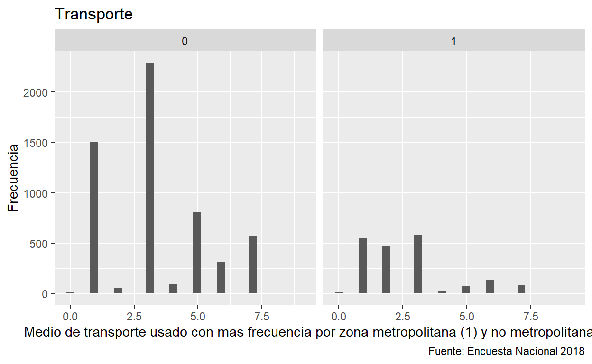
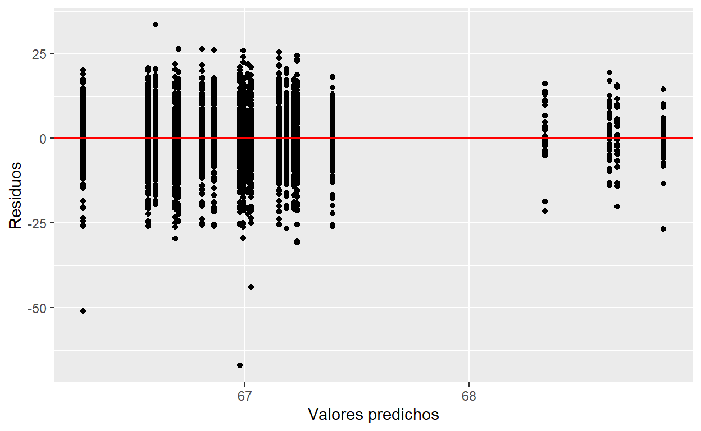
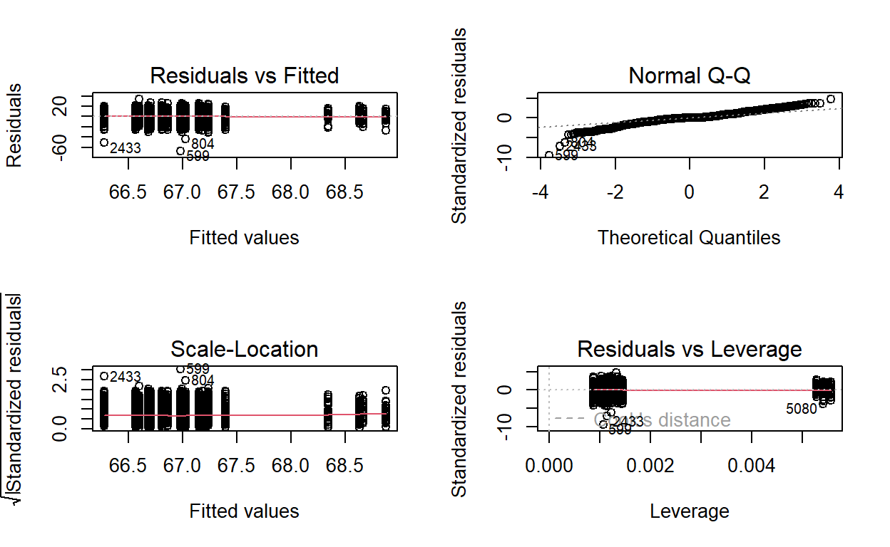

Ya aqui vamos a ver los modelos finales.
library(tidyverse)
library(sjmisc)
library(haven)
library(VIM)
library(kableExtra)
library(skimr)
library(sjPlot)
library(naniar)
library(ggcorrplot)
library(naniar)
library(plyr)
library(dplyr) # df manipulation
library(texreg) # model evaluation
library(MASS) # ordinal regression
library(nnet) # multinomial regression
library(moderndive) # get_regression_table
library(broom)Cargamos los datos:
rm(list = ls())
ind_con_control <- read_sav("data/var_independientes_y_control.sav")
dep_pca_total <- read_sav("data/var_dependientes_total_pca.sav")
dep_pca_importancia <- read_sav("data/var_dependientes_importancia_pca.sav")
dep_pca_preocupacion <- read_sav("data/var_dependientes_preocupacion_pca.sav")
dep_total_clean <- read_sav("data/var_dependientes_total_clean_unreduced_final.sav")1 Construcción de modelo
Juntamos los dataframes:
reg_pca_total <- merge(ind_con_control, dep_pca_total,
by = 'row.names', all = TRUE)
reg_pca_importancia <- merge(ind_con_control, dep_pca_importancia,
by = 'row.names', all = TRUE)
reg_pca_preocupacion <- merge(ind_con_control, dep_pca_preocupacion,
by = 'row.names', all = TRUE)
dep_total_clean <- merge(ind_con_control, dep_total_clean,
by = 'row.names', all = TRUE)Conceptos basicos para modelos de regresion
Nuestra variable dependiente es continua ya que se toma el promedio.
Requisitos para regresión múltiple:
- Tamano muestral elevado de minimo 500 observaciones. Tenemos 6466 observaciones asi que satisfacemos eso.
- Variable dependiente tiene que ser continua o dicotómica
- Mejor es ver relacion individual entre VD y VI y despues anadir al set de componentes
- No anadir variables innecesarias!
- Para tener variables significativas , el p < 0.05
Controlamos por las variables confundidoras mas relevantes según la literatura. Esto seria, el nivel socio-economico (NSE), el nivel de educación, y la edad.
Modelo regresión lineal para el indice de PCA
Tampoco las variables confundidoras parecen tener alguna significancia estadistica.
Usamos el primer indice ya que ese anade mas significancia al peso relativo de cada dimension. Ese es el indice_01.
Para los modelos del primer indice vemos que las zonas no tienen significancia estadistica. Tampoco las otras covariables. Solo tienen significancia con valor-p < 0.05 el Tipo de combustible que usa un auto. Esta significancia tambien la vimos en el modelo del post anterior. Sin embargo para investigar esto bien, habria que estratificar nuestros datos para que tengamos solo a las personas que manejan un auto para ver si hay una diferencia entre ellos. Con este dataset no es posible investigarlo, habria que anadir la pregunta de P41: ¿Tiene automóvil de uso particular en su casa?.
modelo_pca_zonas <- lm(indice_01 ~ 1 + factor(ZONAS), data = reg_pca_total, na.action = na.exclude)
modelo_pca_zonas_nse <- lm(indice_01 ~ 1 + factor(ZONAS) + factor(NSE), data = reg_pca_total, na.action = na.exclude)
modelo_pca_zonas_edu <- lm(indice_01 ~ 1 + factor(ZONAS) + factor(Niv_Edu), data = reg_pca_total, na.action = na.exclude)
modelo_pca_zonas_edad <- lm(indice_01 ~ 1 + factor(ZONAS) + Edad, data = reg_pca_total, na.action = na.exclude)
modelo_pca_zonas_estudiante <- lm(indice_01 ~ 1 + factor(ZONAS) + factor(Estudiante), data = reg_pca_total, na.action = na.exclude)
modelo_pca_zonas_razon_bici <- lm(indice_01 ~ 1 + factor(ZONAS) + factor(Razon_Bici), data = reg_pca_total, na.action = na.exclude)
modelo_pca_zonas_transporte <- lm(indice_01 ~ 1 + factor(ZONAS) + factor(Transporte_mas_freq), data = reg_pca_total, na.action = na.exclude)
modelo_pca_zonas_combustible <- lm(indice_01 ~ 1 + factor(ZONAS) + factor(Automovil_Combustible), data = reg_pca_total, na.action = na.exclude)
modelos_pca <- list(modelo_pca_zonas,modelo_pca_zonas_nse,modelo_pca_zonas_edu,modelo_pca_zonas_edad,modelo_pca_zonas_estudiante,modelo_pca_zonas_razon_bici,modelo_pca_zonas_transporte, modelo_pca_zonas_combustible)
screenreg(modelos_pca)
======================================================================================================================================
Model 1 Model 2 Model 3 Model 4 Model 5 Model 6 Model 7 Model 8
--------------------------------------------------------------------------------------------------------------------------------------
(Intercept) 61.47 *** 61.72 *** 61.77 *** 61.51 *** 61.63 *** 61.78 *** 62.85 *** 61.52 ***
(0.27) (0.36) (2.11) (0.48) (0.39) (0.81) (2.28) (0.37)
factor(ZONAS)2 0.52 0.52 0.53 0.52 0.53 0.42 0.47 0.68
(0.40) (0.40) (0.40) (0.40) (0.40) (0.41) (0.43) (0.54)
factor(ZONAS)3 0.30 0.29 0.31 0.30 0.30 0.25 0.27 0.01
(0.41) (0.41) (0.41) (0.41) (0.41) (0.42) (0.44) (0.56)
factor(ZONAS)4 0.22 0.23 0.21 0.22 0.23 0.13 0.14 0.23
(0.37) (0.37) (0.37) (0.37) (0.37) (0.38) (0.40) (0.49)
factor(NSE)2 -0.53
(0.38)
factor(NSE)3 -0.62
(0.40)
factor(NSE)4 0.04
(0.43)
factor(NSE)5 1.19
(0.81)
factor(Niv_Edu)2 1.20
(2.22)
factor(Niv_Edu)3 -0.10
(2.17)
factor(Niv_Edu)4 0.08
(2.17)
factor(Niv_Edu)5 -0.69
(2.11)
factor(Niv_Edu)6 -1.28
(2.33)
factor(Niv_Edu)7 -0.48
(2.13)
factor(Niv_Edu)8 -0.12
(2.13)
factor(Niv_Edu)9 -0.20
(2.11)
factor(Niv_Edu)10 -0.43
(2.21)
Edad -0.00
(0.01)
factor(Estudiante)2 -0.20
(0.36)
factor(Estudiante)8 -2.23
(7.71)
factor(Estudiante)9 -1.24
(2.93)
factor(Razon_Bici)2 0.70
(0.87)
factor(Razon_Bici)3 0.32
(0.98)
factor(Razon_Bici)4 -0.70
(0.89)
factor(Razon_Bici)5 -0.71
(0.95)
factor(Razon_Bici)6 -0.30
(0.84)
factor(Razon_Bici)7 0.46
(0.89)
factor(Razon_Bici)8 -0.65
(0.80)
factor(Razon_Bici)9 -0.43
(0.81)
factor(Razon_Bici)10 -0.37
(1.06)
factor(Transporte_mas_freq)1 -1.08
(2.29)
factor(Transporte_mas_freq)2 -1.78
(2.33)
factor(Transporte_mas_freq)3 -1.34
(2.28)
factor(Transporte_mas_freq)4 0.69
(2.54)
factor(Transporte_mas_freq)5 -1.77
(2.31)
factor(Transporte_mas_freq)6 -1.67
(2.34)
factor(Transporte_mas_freq)7 -1.41
(2.32)
factor(Transporte_mas_freq)9 -3.36
(6.69)
factor(Automovil_Combustible)2 -1.00 *
(0.45)
factor(Automovil_Combustible)3 3.77
(6.40)
factor(Automovil_Combustible)4 1.89
(2.48)
factor(Automovil_Combustible)5 3.01
(3.08)
factor(Automovil_Combustible)6 3.65
(4.95)
factor(Automovil_Combustible)9 3.44
(3.69)
--------------------------------------------------------------------------------------------------------------------------------------
R^2 0.00 0.00 0.00 0.00 0.00 0.00 0.00 0.00
Adj. R^2 -0.00 0.00 -0.00 -0.00 -0.00 0.00 -0.00 0.00
Num. obs. 6130 6130 6130 6130 6130 6091 6130 3636
======================================================================================================================================
*** p < 0.001; ** p < 0.01; * p < 0.05Seguimos con el modelo con indice 02 a ver si hay significancia.
En el segundo indice notamos que la Zona 2 tiene significancia estadistica. Esto significa que la respuesta de encuestados en la zona 2: EL NORTE comparten una percepción hacia el medio ambiente mas uniforme que se encuentra en otras zonas. Es decir, las personas tienen una percepción mas similar. Sin embargo, esto no indica ninguna causalidad, especialmente porque en las otras zonas no hay significancia estadistica.
Vemos tambien que el Nivel Socio Economico mas pobre (nivel 5, cual indica NSE de E) parece tener significancia estadistica para determinar la percepción de alguien hacia el medio ambiente. Repetimos, no podemos hablar de causalidad porque el otros niveles socio-economicos no parecen influir la percepción.
modelo_pca_zonas <- lm(indice_02 ~ 1 + factor(ZONAS), data = reg_pca_total, na.action = na.exclude)
modelo_pca_zonas_nse <- lm(indice_02 ~ 1 + factor(ZONAS) + factor(NSE), data = reg_pca_total, na.action = na.exclude)
modelo_pca_zonas_edu <- lm(indice_02 ~ 1 + factor(ZONAS) + factor(Niv_Edu), data = reg_pca_total, na.action = na.exclude)
modelo_pca_zonas_edad <- lm(indice_02 ~ 1 + factor(ZONAS) + Edad, data = reg_pca_total, na.action = na.exclude)
modelo_pca_zonas_estudiante <- lm(indice_02 ~ 1 + factor(ZONAS) + factor(Estudiante), data = reg_pca_total, na.action = na.exclude)
modelo_pca_zonas_razon_bici <- lm(indice_02 ~ 1 + factor(ZONAS) + factor(Razon_Bici), data = reg_pca_total, na.action = na.exclude)
modelo_pca_zonas_transporte <- lm(indice_02 ~ 1 + factor(ZONAS) + factor(Transporte_mas_freq), data = reg_pca_total, na.action = na.exclude)
modelo_pca_zonas_combustible <- lm(indice_02 ~ 1 + factor(ZONAS) + factor(Automovil_Combustible), data = reg_pca_total, na.action = na.exclude)
modelos_pca_2 <- list(modelo_pca_zonas,modelo_pca_zonas_nse,modelo_pca_zonas_edu,modelo_pca_zonas_edad,modelo_pca_zonas_estudiante,modelo_pca_zonas_razon_bici,modelo_pca_zonas_transporte, modelo_pca_zonas_combustible)
screenreg(modelos_pca_2)
======================================================================================================================================
Model 1 Model 2 Model 3 Model 4 Model 5 Model 6 Model 7 Model 8
--------------------------------------------------------------------------------------------------------------------------------------
(Intercept) 66.67 *** 66.69 *** 66.01 *** 66.69 *** 66.83 *** 66.58 *** 68.67 *** 66.79 ***
(0.18) (0.24) (1.38) (0.31) (0.26) (0.53) (1.49) (0.24)
factor(ZONAS)2 0.55 * 0.53 * 0.54 * 0.55 * 0.55 * 0.47 0.62 * 0.53
(0.26) (0.26) (0.26) (0.26) (0.26) (0.27) (0.28) (0.34)
factor(ZONAS)3 0.34 0.32 0.34 0.34 0.35 0.29 0.43 -0.11
(0.27) (0.27) (0.27) (0.27) (0.27) (0.28) (0.29) (0.36)
factor(ZONAS)4 0.30 0.29 0.31 0.30 0.32 0.25 0.35 0.09
(0.24) (0.24) (0.24) (0.24) (0.24) (0.25) (0.26) (0.31)
factor(NSE)2 0.02
(0.25)
factor(NSE)3 -0.41
(0.26)
factor(NSE)4 0.17
(0.28)
factor(NSE)5 1.65 **
(0.53)
factor(Niv_Edu)2 1.60
(1.45)
factor(Niv_Edu)3 0.96
(1.42)
factor(Niv_Edu)4 0.85
(1.42)
factor(Niv_Edu)5 0.30
(1.38)
factor(Niv_Edu)6 0.45
(1.53)
factor(Niv_Edu)7 0.80
(1.39)
factor(Niv_Edu)8 0.95
(1.40)
factor(Niv_Edu)9 0.57
(1.38)
factor(Niv_Edu)10 0.58
(1.45)
Edad -0.00
(0.01)
factor(Estudiante)2 -0.20
(0.24)
factor(Estudiante)8 0.68
(5.04)
factor(Estudiante)9 -0.46
(1.92)
factor(Razon_Bici)2 0.29
(0.57)
factor(Razon_Bici)3 0.50
(0.64)
factor(Razon_Bici)4 0.26
(0.58)
factor(Razon_Bici)5 -0.18
(0.62)
factor(Razon_Bici)6 0.35
(0.55)
factor(Razon_Bici)7 0.48
(0.58)
factor(Razon_Bici)8 -0.04
(0.53)
factor(Razon_Bici)9 0.02
(0.53)
factor(Razon_Bici)10 -0.05
(0.69)
factor(Transporte_mas_freq)1 -1.85
(1.50)
factor(Transporte_mas_freq)2 -1.98
(1.53)
factor(Transporte_mas_freq)3 -2.12
(1.49)
factor(Transporte_mas_freq)4 -0.29
(1.66)
factor(Transporte_mas_freq)5 -2.43
(1.51)
factor(Transporte_mas_freq)6 -2.30
(1.53)
factor(Transporte_mas_freq)7 -2.13
(1.52)
factor(Transporte_mas_freq)9 -2.03
(4.38)
factor(Automovil_Combustible)2 -0.39
(0.29)
factor(Automovil_Combustible)3 4.03
(4.11)
factor(Automovil_Combustible)4 1.12
(1.60)
factor(Automovil_Combustible)5 1.23
(1.98)
factor(Automovil_Combustible)6 -4.81
(3.18)
factor(Automovil_Combustible)9 1.70
(2.37)
--------------------------------------------------------------------------------------------------------------------------------------
R^2 0.00 0.00 0.00 0.00 0.00 0.00 0.00 0.00
Adj. R^2 0.00 0.00 0.00 0.00 -0.00 -0.00 0.00 0.00
Num. obs. 6130 6130 6130 6130 6130 6091 6130 3636
======================================================================================================================================
*** p < 0.001; ** p < 0.01; * p < 0.05Evaluamos dos cosas mas usando el indice 02:
- Crear una columna que indice si la zona es afuera o adentro de la región metropolitana. Despues corremos nuevamente los modelos a ver si la predicción mejora.
- Lo que podemos hacer es estratificar a personas mas pobres de cada zonas y re-evaluar si hay alguna significancia estadistica para cada zona.
1
Solo en el modelo 6 cuando se considera el uso de transporte mas frecuente, vivir en la Región Metropolitana (RM, Zona 1) tiene alguna significancia estadistica. Esto se podria explicar porque el transporte público en la RM es diferente al resto de Chile. La RM consiste de metros, cosa que otras zonas no tienen. Tambien tienen muchos mas taxis, micros, colectivos por estar en la región donde hay mas actividad económica, y mas densa de Chile. Sin embargo tambien es la zona con mas desigualdad de Chile, con muchos pobres y muchos ricos. Sin embargo para este modelo (modelo 2) no parecio mostrar significancia estadistica.
# #RECODING the values
zonas_rec <- reg_pca_total %>%
dplyr::select(ZONAS) %>%
rec(rec= "1=1;2,3,4=0;else=copy",suffix="")
zonas_rec <- reg_pca_importancia %>%
dplyr::select(ZONAS) %>%
rec(rec= "1=1;2,3,4=0;else=copy",suffix="")
zonas_rec <- reg_pca_preocupacion %>%
dplyr::select(ZONAS) %>%
rec(rec= "1=1;2,3,4=0;else=copy",suffix="")
reg_pca_total$Zonas_recoded <- zonas_rec
reg_pca_importancia$Zonas_recoded <- zonas_rec
reg_pca_preocupacion$Zonas_recoded <- zonas_rec
reg_pca_total[] <- lapply(reg_pca_total, function(x) as.numeric(as.character(x)))
reg_pca_total <- do.call(data.frame, reg_pca_total)
reg_pca_importancia[] <- lapply(reg_pca_importancia, function(x) as.numeric(as.character(x)))
reg_pca_importancia <- do.call(data.frame, reg_pca_importancia)
reg_pca_preocupacion[] <- lapply(reg_pca_preocupacion, function(x) as.numeric(as.character(x)))
reg_pca_preocupacion <- do.call(data.frame, reg_pca_preocupacion)
recoded_modelo_pca_zonas <- lm(indice_02 ~ 1 + factor(Zonas_recoded), data = reg_pca_total, na.action = na.exclude)
recoded_modelo_pca_zonas_nse <- lm(indice_02 ~ 1 + factor(Zonas_recoded) + factor(NSE), data = reg_pca_total, na.action = na.exclude)
recoded_modelo_pca_zonas_edu <- lm(indice_02 ~ 1 + factor(Zonas_recoded) + factor(Niv_Edu), data = reg_pca_total, na.action = na.exclude)
recoded_modelo_pca_zonas_edad <- lm(indice_02 ~ 1 + factor(Zonas_recoded) + Edad, data = reg_pca_total, na.action = na.exclude)
recoded_modelo_pca_zonas_estudiante <- lm(indice_02 ~ 1 + factor(Zonas_recoded) + factor(Estudiante), data = reg_pca_total, na.action = na.exclude)
recoded_modelo_pca_zonas_razon_bici <- lm(indice_02 ~ 1 + factor(Zonas_recoded) + factor(Razon_Bici), data = reg_pca_total, na.action = na.exclude)
recoded_modelo_pca_zonas_transporte <- lm(indice_02 ~ 1 + factor(Zonas_recoded) + factor(Transporte_mas_freq), data = reg_pca_total, na.action = na.exclude)
recoded_modelo_pca_zonas_combustible <- lm(indice_02 ~ 1 + factor(Zonas_recoded) + factor(Automovil_Combustible), data = reg_pca_total, na.action = na.exclude)
recoded_modelos_pca <- list(recoded_modelo_pca_zonas,recoded_modelo_pca_zonas_nse,recoded_modelo_pca_zonas_edu,
recoded_modelo_pca_zonas_edad,recoded_modelo_pca_zonas_estudiante,
recoded_modelo_pca_zonas_razon_bici,recoded_modelo_pca_zonas_transporte, recoded_modelo_pca_zonas_combustible)
screenreg(recoded_modelos_pca)
======================================================================================================================================
Model 1 Model 2 Model 3 Model 4 Model 5 Model 6 Model 7 Model 8
--------------------------------------------------------------------------------------------------------------------------------------
(Intercept) 67.06 *** 67.06 *** 66.41 *** 67.07 *** 67.23 *** 66.85 *** 69.12 *** 66.96 ***
(0.11) (0.20) (1.37) (0.29) (0.23) (0.48) (1.49) (0.15)
factor(Zonas_recoded)1 -0.38 -0.37 -0.39 -0.38 -0.40 -0.33 -0.45 * -0.17
(0.21) (0.21) (0.21) (0.21) (0.21) (0.21) (0.23) (0.27)
factor(NSE)2 0.01
(0.25)
factor(NSE)3 -0.41
(0.26)
factor(NSE)4 0.17
(0.28)
factor(NSE)5 1.66 **
(0.53)
factor(Niv_Edu)2 1.60
(1.45)
factor(Niv_Edu)3 0.95
(1.42)
factor(Niv_Edu)4 0.84
(1.42)
factor(Niv_Edu)5 0.29
(1.38)
factor(Niv_Edu)6 0.45
(1.53)
factor(Niv_Edu)7 0.79
(1.39)
factor(Niv_Edu)8 0.95
(1.40)
factor(Niv_Edu)9 0.56
(1.38)
factor(Niv_Edu)10 0.56
(1.45)
Edad -0.00
(0.01)
factor(Estudiante)2 -0.21
(0.24)
factor(Estudiante)8 0.75
(5.04)
factor(Estudiante)9 -0.47
(1.92)
factor(Razon_Bici)2 0.35
(0.56)
factor(Razon_Bici)3 0.56
(0.63)
factor(Razon_Bici)4 0.32
(0.58)
factor(Razon_Bici)5 -0.12
(0.62)
factor(Razon_Bici)6 0.40
(0.55)
factor(Razon_Bici)7 0.53
(0.58)
factor(Razon_Bici)8 0.00
(0.52)
factor(Razon_Bici)9 0.07
(0.52)
factor(Razon_Bici)10 0.00
(0.69)
factor(Transporte_mas_freq)1 -1.84
(1.50)
factor(Transporte_mas_freq)2 -1.98
(1.53)
factor(Transporte_mas_freq)3 -2.12
(1.49)
factor(Transporte_mas_freq)4 -0.27
(1.66)
factor(Transporte_mas_freq)5 -2.40
(1.51)
factor(Transporte_mas_freq)6 -2.31
(1.53)
factor(Transporte_mas_freq)7 -2.13
(1.52)
factor(Transporte_mas_freq)9 -1.98
(4.37)
factor(Automovil_Combustible)2 -0.39
(0.29)
factor(Automovil_Combustible)3 4.03
(4.11)
factor(Automovil_Combustible)4 1.11
(1.59)
factor(Automovil_Combustible)5 1.30
(1.98)
factor(Automovil_Combustible)6 -4.89
(3.18)
factor(Automovil_Combustible)9 1.60
(2.37)
--------------------------------------------------------------------------------------------------------------------------------------
R^2 0.00 0.00 0.00 0.00 0.00 0.00 0.00 0.00
Adj. R^2 0.00 0.00 0.00 0.00 0.00 -0.00 0.00 -0.00
Num. obs. 6130 6130 6130 6130 6130 6091 6130 3636
======================================================================================================================================
*** p < 0.001; ** p < 0.01; * p < 0.05Para confirmar esto vemos la distribucion de uso de transporte entre la zona metropolitana y region metropolitana.
En la RM se usa mas el metro relativo a las 3 otras zonas. Sin embargo, se usa mas el micro y automovil en otra zona. Concluyendo, este uso de metro (indicador de persona residiendo en la RM) parece tener algún efecto en la percepción hacia el medio ambiente.
reg_pca_total %>%
ggplot(aes(x = Transporte_mas_freq, na.rm = T)) +
geom_histogram() +
facet_grid(~Zonas_recoded) +
labs(x = "Medio de transporte usado con mas frecuencia por zona metropolitana (1) y no metropolitana (0)", y = "Frecuencia",
title = "Transporte", caption = "Fuente: Encuesta Nacional 2018")
2
Dividimos el subsetnse_5 <- subset(reg_pca_total, NSE == 5)Corremos el modelo para gente del quinto nivel socioeconomico.
Los niveles de educación (2 a 5,basica incompleta a media completa) mas bajo parece afectar la percepción entre la población mas pobre. Esto concuerda con nuestro marco teórico.
Sin embargo, no vemos una significancia para la distribución de gente de NSE de E entre las diferentes zonas.
modelo_pca_zonas <- lm(indice_02 ~ 1 + factor(ZONAS), data = nse_5, na.action = na.exclude)
modelo_pca_zonas_edu <- lm(indice_02 ~ 1 + factor(ZONAS) + factor(Niv_Edu), data = nse_5, na.action = na.exclude)
modelo_pca_zonas_edad <- lm(indice_02 ~ 1 + factor(ZONAS) + Edad, data = nse_5, na.action = na.exclude)
modelo_pca_zonas_estudiante <- lm(indice_02 ~ 1 + factor(ZONAS) + factor(Estudiante), data = nse_5, na.action = na.exclude)
modelo_pca_zonas_razon_bici <- lm(indice_02 ~ 1 + factor(ZONAS) + factor(Razon_Bici), data = nse_5, na.action = na.exclude)
modelo_pca_zonas_transporte <- lm(indice_02 ~ 1 + factor(ZONAS) + factor(Transporte_mas_freq), data = nse_5, na.action = na.exclude)
modelo_pca_zonas_combustible <- lm(indice_02 ~ 1 + factor(ZONAS) + factor(Automovil_Combustible), data = nse_5, na.action = na.exclude)
modelos_pca <- list(modelo_pca_zonas,modelo_pca_zonas_edu,modelo_pca_zonas_edad,modelo_pca_zonas_estudiante,modelo_pca_zonas_razon_bici,modelo_pca_zonas_transporte, modelo_pca_zonas_combustible)
screenreg(modelos_pca)
=================================================================================================================
Model 1 Model 2 Model 3 Model 4 Model 5 Model 6 Model 7
-----------------------------------------------------------------------------------------------------------------
(Intercept) 69.14 *** 63.79 *** 71.25 *** 69.35 *** 68.56 *** 69.21 *** 70.16 ***
(1.02) (2.38) (1.93) (1.62) (2.43) (1.23) (2.90)
factor(ZONAS)2 -0.92 -1.19 -0.92 -1.06 -1.64 -0.95 -5.36
(1.38) (1.42) (1.38) (1.41) (1.35) (1.49) (3.65)
factor(ZONAS)3 -1.29 -2.00 -1.58 -1.43 -1.48 -1.32 -5.55
(1.49) (1.51) (1.51) (1.52) (1.44) (1.62) (3.40)
factor(ZONAS)4 0.02 -0.35 -0.18 -0.09 -0.69 -0.35 -2.55
(1.35) (1.37) (1.36) (1.38) (1.33) (1.46) (3.79)
factor(Niv_Edu)2 6.40 **
(2.42)
factor(Niv_Edu)3 5.66 *
(2.51)
factor(Niv_Edu)4 6.33 *
(3.03)
factor(Niv_Edu)5 6.63 *
(2.61)
factor(Niv_Edu)6 -4.43
(5.37)
factor(Niv_Edu)7 3.53
(5.41)
factor(Niv_Edu)8 3.16
(3.18)
factor(Niv_Edu)9 6.06
(3.64)
Edad -0.04
(0.03)
factor(Estudiante)2 -0.08
(1.37)
factor(Estudiante)9 -2.15
(3.78)
factor(Razon_Bici)2 1.26
(2.67)
factor(Razon_Bici)3 -0.17
(2.87)
factor(Razon_Bici)4 3.22
(2.71)
factor(Razon_Bici)5 -0.15
(2.71)
factor(Razon_Bici)6 5.41 *
(2.63)
factor(Razon_Bici)7 -1.13
(3.22)
factor(Razon_Bici)8 -0.74
(2.53)
factor(Razon_Bici)9 1.28
(2.37)
factor(Razon_Bici)10 -4.18
(4.44)
factor(Transporte_mas_freq)2 -0.79
(2.60)
factor(Transporte_mas_freq)3 -0.65
(1.42)
factor(Transporte_mas_freq)4 0.87
(2.59)
factor(Transporte_mas_freq)5 0.08
(1.72)
factor(Transporte_mas_freq)6 -0.19
(2.12)
factor(Transporte_mas_freq)7 1.86
(1.83)
factor(Automovil_Combustible)2 -2.22
(2.76)
-----------------------------------------------------------------------------------------------------------------
R^2 0.01 0.07 0.01 0.01 0.09 0.02 0.08
Adj. R^2 -0.01 0.02 -0.01 -0.02 0.04 -0.03 -0.01
Num. obs. 204 204 204 204 203 204 44
=================================================================================================================
*** p < 0.001; ** p < 0.01; * p < 0.05Regresión lineal para importancia y preocupación
No hay nada que indique algo interesante para investigar.
modelo_pca_zonas <- lm(indice_02 ~ 1 + factor(ZONAS), data = reg_pca_importancia, na.action = na.exclude)
modelo_pca_zonas_nse <- lm(indice_02 ~ 1 + factor(ZONAS) + factor(NSE), data = reg_pca_importancia, na.action = na.exclude)
modelo_pca_zonas_edu <- lm(indice_02 ~ 1 + factor(ZONAS) + factor(Niv_Edu), data = reg_pca_importancia, na.action = na.exclude)
modelo_pca_zonas_edad <- lm(indice_02 ~ 1 + factor(ZONAS) + Edad, data = reg_pca_importancia, na.action = na.exclude)
modelo_pca_zonas_estudiante <- lm(indice_02 ~ 1 + factor(ZONAS) + factor(Estudiante), data = reg_pca_importancia, na.action = na.exclude)
modelo_pca_zonas_razon_bici <- lm(indice_02 ~ 1 + factor(ZONAS) + factor(Razon_Bici), data = reg_pca_importancia, na.action = na.exclude)
modelo_pca_zonas_transporte <- lm(indice_02 ~ 1 + factor(ZONAS) + factor(Transporte_mas_freq), data = reg_pca_importancia, na.action = na.exclude)
modelo_pca_zonas_combustible <- lm(indice_02 ~ 1 + factor(ZONAS) + factor(Automovil_Combustible), data = reg_pca_importancia, na.action = na.exclude)
modelos_pca_2 <- list(modelo_pca_zonas,modelo_pca_zonas_nse,modelo_pca_zonas_edu,modelo_pca_zonas_edad,modelo_pca_zonas_estudiante,modelo_pca_zonas_razon_bici,modelo_pca_zonas_transporte, modelo_pca_zonas_combustible)
screenreg(modelos_pca_2)
======================================================================================================================================
Model 1 Model 2 Model 3 Model 4 Model 5 Model 6 Model 7 Model 8
--------------------------------------------------------------------------------------------------------------------------------------
(Intercept) 21.18 *** 21.18 *** 21.01 *** 21.28 *** 21.23 *** 21.34 *** 22.57 *** 21.39 ***
(0.13) (0.17) (1.01) (0.23) (0.19) (0.39) (1.09) (0.17)
factor(ZONAS)2 -0.15 -0.15 -0.14 -0.15 -0.15 -0.19 -0.11 -0.26
(0.19) (0.19) (0.19) (0.19) (0.19) (0.20) (0.21) (0.25)
factor(ZONAS)3 -0.02 -0.02 -0.01 -0.01 -0.02 -0.08 0.00 -0.34
(0.20) (0.20) (0.20) (0.20) (0.20) (0.20) (0.21) (0.26)
factor(ZONAS)4 -0.04 -0.05 -0.04 -0.04 -0.04 -0.08 -0.03 0.03
(0.18) (0.18) (0.18) (0.18) (0.18) (0.18) (0.19) (0.23)
factor(NSE)2 0.03
(0.18)
factor(NSE)3 -0.02
(0.19)
factor(NSE)4 0.07
(0.21)
factor(NSE)5 -0.36
(0.39)
factor(Niv_Edu)2 0.05
(1.07)
factor(Niv_Edu)3 -0.20
(1.04)
factor(Niv_Edu)4 0.33
(1.04)
factor(Niv_Edu)5 0.09
(1.01)
factor(Niv_Edu)6 0.61
(1.12)
factor(Niv_Edu)7 0.21
(1.02)
factor(Niv_Edu)8 0.09
(1.02)
factor(Niv_Edu)9 0.21
(1.01)
factor(Niv_Edu)10 0.57
(1.06)
Edad -0.00
(0.00)
factor(Estudiante)2 -0.06
(0.17)
factor(Estudiante)8 -7.34 *
(3.70)
factor(Estudiante)9 0.55
(1.40)
factor(Razon_Bici)2 -0.18
(0.42)
factor(Razon_Bici)3 -0.05
(0.47)
factor(Razon_Bici)4 0.07
(0.43)
factor(Razon_Bici)5 -0.24
(0.46)
factor(Razon_Bici)6 -0.32
(0.40)
factor(Razon_Bici)7 0.06
(0.43)
factor(Razon_Bici)8 -0.31
(0.38)
factor(Razon_Bici)9 0.03
(0.39)
factor(Razon_Bici)10 0.25
(0.51)
factor(Transporte_mas_freq)1 -1.44
(1.10)
factor(Transporte_mas_freq)2 -1.46
(1.12)
factor(Transporte_mas_freq)3 -1.28
(1.10)
factor(Transporte_mas_freq)4 -1.64
(1.22)
factor(Transporte_mas_freq)5 -1.65
(1.11)
factor(Transporte_mas_freq)6 -1.26
(1.12)
factor(Transporte_mas_freq)7 -1.60
(1.11)
factor(Transporte_mas_freq)9 -2.92
(3.21)
factor(Automovil_Combustible)2 -0.24
(0.21)
factor(Automovil_Combustible)3 -2.44
(2.98)
factor(Automovil_Combustible)4 -0.84
(1.16)
factor(Automovil_Combustible)5 -0.56
(1.43)
factor(Automovil_Combustible)6 -6.03 **
(2.31)
factor(Automovil_Combustible)9 -2.02
(1.72)
--------------------------------------------------------------------------------------------------------------------------------------
R^2 0.00 0.00 0.00 0.00 0.00 0.00 0.00 0.00
Adj. R^2 -0.00 -0.00 -0.00 -0.00 -0.00 -0.00 -0.00 0.00
Num. obs. 6130 6130 6130 6130 6130 6091 6130 3636
======================================================================================================================================
*** p < 0.001; ** p < 0.01; * p < 0.05modelo_pca_zonas <- lm(indice_02 ~ 1 + factor(ZONAS), data = reg_pca_preocupacion, na.action = na.exclude)
modelo_pca_zonas_nse <- lm(indice_02 ~ 1 + factor(ZONAS) + factor(NSE), data = reg_pca_preocupacion, na.action = na.exclude)
modelo_pca_zonas_edu <- lm(indice_02 ~ 1 + factor(ZONAS) + factor(Niv_Edu), data = reg_pca_preocupacion, na.action = na.exclude)
modelo_pca_zonas_edad <- lm(indice_02 ~ 1 + factor(ZONAS) + Edad, data = reg_pca_preocupacion, na.action = na.exclude)
modelo_pca_zonas_estudiante <- lm(indice_02 ~ 1 + factor(ZONAS) + factor(Estudiante), data = reg_pca_preocupacion, na.action = na.exclude)
modelo_pca_zonas_razon_bici <- lm(indice_02 ~ 1 + factor(ZONAS) + factor(Razon_Bici), data = reg_pca_preocupacion, na.action = na.exclude)
modelo_pca_zonas_transporte <- lm(indice_02 ~ 1 + factor(ZONAS) + factor(Transporte_mas_freq), data = reg_pca_preocupacion, na.action = na.exclude)
modelo_pca_zonas_combustible <- lm(indice_02 ~ 1 + factor(ZONAS) + factor(Automovil_Combustible), data = reg_pca_preocupacion, na.action = na.exclude)
modelos_pca_2 <- list(modelo_pca_zonas,modelo_pca_zonas_nse,modelo_pca_zonas_edu,modelo_pca_zonas_edad,modelo_pca_zonas_estudiante,modelo_pca_zonas_razon_bici,modelo_pca_zonas_transporte, modelo_pca_zonas_combustible)
screenreg(modelos_pca_2)
======================================================================================================================================
Model 1 Model 2 Model 3 Model 4 Model 5 Model 6 Model 7 Model 8
--------------------------------------------------------------------------------------------------------------------------------------
(Intercept) 35.77 *** 35.19 *** 30.31 *** 35.79 *** 35.99 *** 35.35 *** 41.10 *** 36.33 ***
(0.41) (0.54) (3.14) (0.71) (0.59) (1.20) (3.40) (0.55)
factor(ZONAS)2 0.98 0.92 0.97 0.98 0.99 0.80 1.15 0.15
(0.60) (0.60) (0.60) (0.60) (0.60) (0.61) (0.65) (0.79)
factor(ZONAS)3 0.80 0.72 0.80 0.80 0.81 0.59 0.93 -0.60
(0.62) (0.62) (0.62) (0.62) (0.62) (0.63) (0.65) (0.82)
factor(ZONAS)4 0.61 0.54 0.69 0.62 0.64 0.50 0.77 0.07
(0.55) (0.55) (0.55) (0.55) (0.55) (0.56) (0.59) (0.71)
factor(NSE)2 1.05
(0.57)
factor(NSE)3 0.06
(0.60)
factor(NSE)4 1.13
(0.64)
factor(NSE)5 2.68 *
(1.22)
factor(Niv_Edu)2 6.63 *
(3.31)
factor(Niv_Edu)3 6.53 *
(3.23)
factor(Niv_Edu)4 5.74
(3.24)
factor(Niv_Edu)5 4.83
(3.15)
factor(Niv_Edu)6 6.12
(3.48)
factor(Niv_Edu)7 5.93
(3.17)
factor(Niv_Edu)8 6.55 *
(3.18)
factor(Niv_Edu)9 4.69
(3.15)
factor(Niv_Edu)10 6.36
(3.30)
Edad -0.00
(0.01)
factor(Estudiante)2 -0.28
(0.54)
factor(Estudiante)8 1.46
(11.50)
factor(Estudiante)9 -2.60
(4.37)
factor(Razon_Bici)2 0.05
(1.29)
factor(Razon_Bici)3 1.35
(1.46)
factor(Razon_Bici)4 0.71
(1.33)
factor(Razon_Bici)5 0.16
(1.42)
factor(Razon_Bici)6 0.50
(1.26)
factor(Razon_Bici)7 1.49
(1.33)
factor(Razon_Bici)8 0.21
(1.20)
factor(Razon_Bici)9 0.93
(1.20)
factor(Razon_Bici)10 -0.24
(1.58)
factor(Transporte_mas_freq)1 -5.62
(3.41)
factor(Transporte_mas_freq)2 -5.09
(3.48)
factor(Transporte_mas_freq)3 -5.62
(3.41)
factor(Transporte_mas_freq)4 -2.00
(3.79)
factor(Transporte_mas_freq)5 -5.69
(3.45)
factor(Transporte_mas_freq)6 -4.71
(3.49)
factor(Transporte_mas_freq)7 -5.46
(3.47)
factor(Transporte_mas_freq)9 -5.18
(9.98)
factor(Automovil_Combustible)2 -0.05
(0.66)
factor(Automovil_Combustible)3 2.56
(9.39)
factor(Automovil_Combustible)4 -0.52
(3.65)
factor(Automovil_Combustible)5 -2.55
(4.52)
factor(Automovil_Combustible)6 -21.13 **
(7.27)
factor(Automovil_Combustible)9 2.26
(5.42)
--------------------------------------------------------------------------------------------------------------------------------------
R^2 0.00 0.00 0.00 0.00 0.00 0.00 0.00 0.00
Adj. R^2 0.00 0.00 0.00 -0.00 -0.00 -0.00 0.00 0.00
Num. obs. 6130 6130 6130 6130 6130 6091 6130 3636
======================================================================================================================================
*** p < 0.001; ** p < 0.01; * p < 0.05Evaluación
Como ya podemos ver en los summaries, todos los \(R_{2}\) son de 0. No se puede predecir absolutamente nada.
Evaluamos los modelos mas relevantes a nuestra hipotesis:
- modelo: indice 02, pca total, zonas (2), nse (5)
- modelo: indice 02, pca total, zonas (RM vs resto)
modelo_pca_zonas_nse <- lm(indice_02 ~ 1 + factor(ZONAS) + factor(NSE), data = reg_pca_total, na.action = na.exclude)
recoded_modelo_pca_zonas_nse <- lm(indice_02 ~ 1 + factor(ZONAS) + factor(NSE), data = reg_pca_total, na.action = na.exclude)
modelos_buenos <- list(modelo_pca_zonas_nse,recoded_modelo_pca_zonas_nse)
screenreg(modelos_buenos)
========================================
Model 1 Model 2
----------------------------------------
(Intercept) 66.69 *** 66.69 ***
(0.24) (0.24)
factor(ZONAS)2 0.53 * 0.53 *
(0.26) (0.26)
factor(ZONAS)3 0.32 0.32
(0.27) (0.27)
factor(ZONAS)4 0.29 0.29
(0.24) (0.24)
factor(NSE)2 0.02 0.02
(0.25) (0.25)
factor(NSE)3 -0.41 -0.41
(0.26) (0.26)
factor(NSE)4 0.17 0.17
(0.28) (0.28)
factor(NSE)5 1.65 ** 1.65 **
(0.53) (0.53)
----------------------------------------
R^2 0.00 0.00
Adj. R^2 0.00 0.00
Num. obs. 6130 6130
========================================
*** p < 0.001; ** p < 0.01; * p < 0.05No hay sesgo explicito para los modelos.
ggplot(mapping = aes(x = modelo_pca_zonas_nse$fitted.values, y = modelo_pca_zonas_nse$residuals)) +
labs(x = "Valores predichos", y = "Residuos") +
geom_point() +
geom_hline(mapping = aes(yintercept = 0), color = "red")
ggplot(mapping = aes(x = recoded_modelo_pca_zonas_nse$fitted.values, y = recoded_modelo_pca_zonas_nse$residuals)) +
labs(x = "Valores predichos", y = "Residuos") +
geom_point() +
geom_hline(mapping = aes(yintercept = 0), color = "red")El \(R_{2}\) es muy bajo.
fitting null model for pseudo-r2[1] 0.0005067496pR2(modelo_pca_zonas_nse)[["McFadden"]]fitting null model for pseudo-r2[1] 0.0005067496# Pseudo R cuadrado ajustado
library(DescTools)
PseudoR2(recoded_modelo_pca_zonas_nse, c("McFadden"))[1] NA[1] NATesteando los modelos
Los gráficos de diagnóstico muestran los residuos de cuatro maneras diferentes:
Para la relación residuos vs real Residuos vs. Ajuste: se utiliza para comprobar los supuestos de linealidad. Si los residuos se distribuyen por igual en torno a una línea horizontal sin patrones distintos (la línea roja es aproximadamente horizontal en cero), es una buena indicación de que existe una relación lineal.
En ambos modelos no se distribuye de una manera horizontal alrededor del 0. Hay un sesgo para cada valor predicho por lo que fluctua verticalmente.
Lo ideal es una línea horizontal alrededor de cero:
Para la distribución de residuos Q-Q normal: se utiliza para comprobar el supuesto de normalidad de los residuos. Si la mayoría de los residuos siguen la línea recta discontinua, se cumple el supuesto.
El gráfico QQ de los residuos puede utilizarse para comprobar visualmente el supuesto de normalidad. El gráfico de probabilidad normal de los residuos debe seguir aproximadamente una línea recta”. Un patrón de desviaciones en forma de arco con respecto a la diagonal indica que los residuos tienen una asimetría excesiva (es decir, no están distribuidos simétricamente, con demasiados errores grandes en la misma dirección). Un patrón de desviaciones en forma de S indica que los residuos tienen una curtosis excesiva, es decir, que hay demasiados o muy pocos errores grandes en ambas direcciones.
En ambos modelos el QQ Plot parece distribuirse relativamente igual por el espacio. Es decir podemos asumir normalidad entre los residuos.
Para la Homoesticidad Escala-Localización: se utiliza para comprobar la homocedasticidad de los residuos (igual varianza de los residuos). Si los residuos se reparten de forma aleatoria y se ve una línea horizontal con puntos repartidos de forma igual (aleatoria), entonces se cumple la hipótesis.
Claramente hay homoesticidad en ambos modelos.
Gráfico de escala-ubicación / gráfico de dispersión-ubicación (igual que el anterior, sólo que utilizando residuos estandarizados) “Queremos una línea más o menos horizontal con puntos más o menos equitativos alrededor”.
No lo evaluamos Residuales vs. Apalancamiento: se utiliza para identificar cualquier valor influyente en nuestro conjunto de datos. Los valores influyentes son valores extremos que podrían influir en los resultados de la regresión cuando se incluyen o excluyen del análisis. Busque los casos fuera de la línea discontinua.
Ayuda recibida de: https://bookdown.org/jimr1603/Intermediate_R_-_R_for_Survey_Analysis/testing-regression-assumptions.html
# Change the panel layout to 2 x 2 (to look at all 4 plots at once)
par(mfrow = c(2, 2))
# Use plot() function to create diagnostic plots
plot(modelo_pca_zonas_nse)
# Change the panel layout to 2 x 2 (to look at all 4 plots at once)
par(mfrow = c(2, 2))
# Use plot() function to create diagnostic plots
plot(recoded_modelo_pca_zonas_nse)
Multicolinealidad en la regresión
Mientras que la colinealidad puede detectarse con una matriz de correlación, la multicolinealidad no es tan fácil de detectar. El Factor de Inflación de la Varianza (VIF) puede utilizarse para determinar en qué medida la varianza de un coeficiente de regresión está inflada debido a la multicolinealidad en el modelo. El menor valor posible es uno, lo que indica que no hay multicolinealidad. Un valor superior a 5 o 10 indica una cantidad problemática de multicolinealidad en los datos. En R utilizamos la función vif() del paquete auto para detectar la multicolinealidad en un modelo de regresión múltiple (donde la variable de respuesta es el ozono y se añaden todas las variables explicativas):
Idealmente esta cerca de 1. Si no removemos esta variable de nuestra regresión.
car::vif(modelo_pca_zonas_nse) GVIF Df GVIF^(1/(2*Df))
factor(ZONAS) 1.007176 3 1.001192
factor(NSE) 1.007176 4 1.000894Conclusión
Los modelos
Habiamos empezado esta investigación para ver si se podia predecir la percepción sobre el cambio climatico y medio ambiente que alguien tiene a base de la zona de donde viene. Teóreticamente esto parecia tener una relación ya que Chile es el pais mas largo del mundo, contando con una diferencia grande en ecosistemas para cada zona, llevando a otra experiencia de lo que significa el cambio climatico o la importancia hacia el medio ambiente. Al crear un PCA para la percepción de importancia, de preocupación, y una de las dos, creamos un indice que nos servia de variable dependiente para la percepción. Nuestra variable independiente fueron las zonas, y los indicadores socio-economicos y socio-demograficos fueron nuestras variables independientes.
Tras correr varios modelos encontramos que no se puede predicir la percepción hacia el medio ambiente a base de donde viene alguien en Chile. Sin embargo, confirmamos que se puede predicir con un valor-p <0.05 la percepción para las personas de educación (basico incompleto a medio completo) y nivel socio economico (E) bajo. Esto concuerda con nuestro marco teórico donde encontramos que hay una relación entre la percepción ambiental y el nivel de educación o el nivel socio-económico.
Los modelos para la percepción misma son imprecisos, donde no son posible de predicir. Adicionalmente, cuentan con homoestacidad que sesga a las predicciones del modelo.
Hay algunas cosas que notamos interesante:
- Hay demasiados datos faltantes para variables independientes y dependientes, para diferentes encuestados.
- Hay un desbalance minimo entre la cantidad de gente que se encueste de cada zona.
- Hay un desbalance entre la cantidad de mujeres y hombres que se entrevisto.
- El nivel de calidad de algunas preguntas es bajo. Para muchas parillas habia un alfa de Cronbach relativamente bajo. Tambien la manera en la que se codifico dejo a muchas respuestas excluyentes. Ultimamente, se escogio para algunas variables codificar de una manera innecesariamente diferente a las otras preguntas.
- La calidad de las preguntas. Aunque era una encuesta hacia el medio ambiente, se toco a veces de forma muy inclara el sentimiento o percepción que alguien tiene hacia el medio ambiente. En algunos casos se pregunto muy directo. En la parilla P19 cuando alguien se le pregunta si tiene dolor por el cambio climatico, pocos responderan que si.
Todos estas observaciones y mas que se hacen durante la investigación llevan a que el mejor modelo aun llegue a ser impreciso. Hay que reparar los errores de datos muestrales primero que proseguir con su uso para la investigación. Especialmente la falta de datos desigual entre variables dependientes y independientes hace que la cantidad de datos para evaluación sea menos de lo que pensamos.
El cluster
Los clusters a base de region y zona no dieron nada que tenga significancia. Sin embargo, se podria investigar el nivel socio-económico de encuestados de cada región/zona. Entendiendo esto mas se puede ver que aspecto de los encuestados es mas relevante para caracterizar percepciones medio ambientales.
A la futura investigación se recomienda reducir la evaluación a algo mas simplistico. Querer controlar solo indicadores sociales hizo todo mas dificil. Es mejor agregar este tipo de resultados/asumir. En nuestro caso tener todo desagregado pudo haber traido mucha influencia de covariables que dejan el Backdoor Path (BDP) abierto. Este BDP se puede cerrar por incluir mas variables que las cancelen, o como ya mencione, agregar las variables usadas para poder ignorar algunas covariables. No recomendamos trabajar con datos desagregados a nivel nacional. Simplifica o la hipotesis o las muestras usadas. Aunque el modelo sea menos realistico, imaginamos que tendra mas significancia.